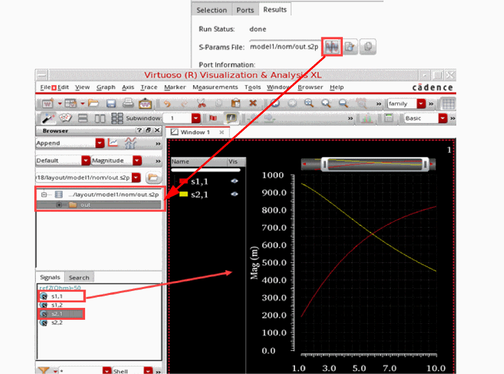

Validating S-Parameter Data Saved by an EM Simulation
After the simulation is complete and you refresh the Electromagnetic Solver assistant by Clicking Refresh on the toolbar, the status of the model is changed to Done. The tool displays the path to the .s2p or .snp S-parameter file on the Results tab of this assistant.
For validation, you can open the results of an EM simulation in multiple ways described below.
Plotting S-Parameter Data in Virtuoso Visualization and Analysis XL
To plot and analyze S-parameter data in Virtuoso® Visualization and Analysis XL:
- Click Open in Results Browser to open the S-parameter file in Results Browser.
-
In the Results Browser, select specific signals.
The signals are plotted in the graph window.

Viewing S-Parameter Data in a Text Editor
To review all data points in the text format, you can open the S-parameter file in a text editor.
-
Click Open in text viewer on the Results tab.
The results are opened in the default text editor set for Virtuoso.
Viewing S-Parameter Data in any Other Application
As the simulation results are a collection of data points, you can review the data in any other third-party application.
-
Click Copy path to clipboard on the Results tab.
The results are copied to the clipboard from where you can copy those to another application.
Return to top